Sistemas Operativos y Redes
Administración de Almacenamiento
Semestre 2022-1
Cristian Ruz - cruz@ing.puc.cl
Departamento de Ciencia de la Computación
Pontificia Universidad Católica de Chile
Dispositivos de I/O
Acceso a dispositivos de I/O: drivers
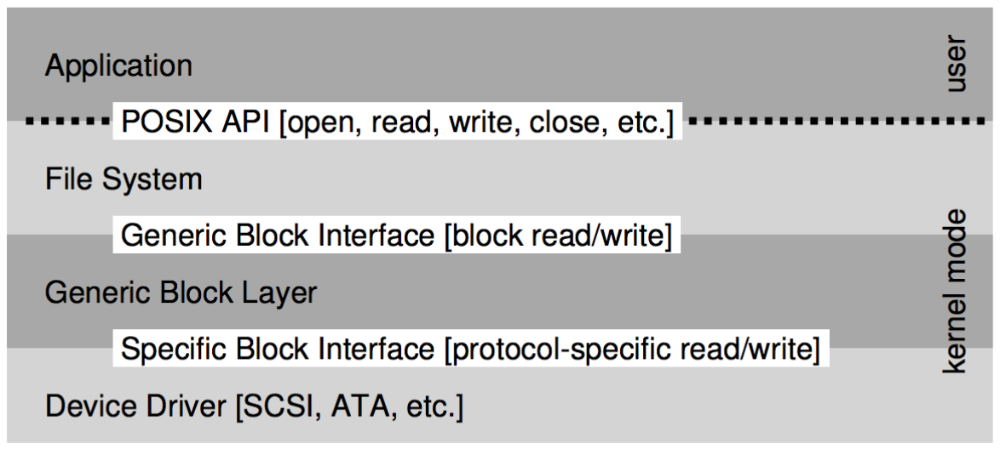Stack de abstracciones para un sistema de archivos
- Device Driver. Código específico para interacción con un dispositivo
- Block Layer. Capa intermedia. Abstracción de bloques de disco
- Sistema de archivos. Capa visible al programador mediante API
70% código de Linux es para drivers (fuente de bugs)
Abstracciones persiguen un objetivo de diseño: device independence
Transferencia de datos: buffers
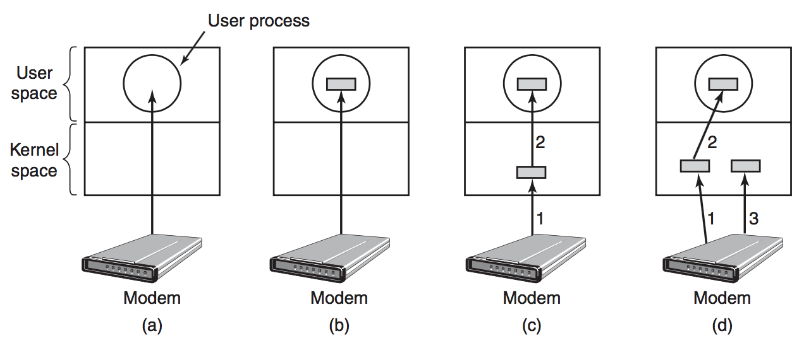- Lectura directa: unbuffered. Lento.
- Buffer en user space. Página puede ser swapped out.
- Buffer en kernel space. Se transfiere al llenarse.
- Double-buffer. Mientras uno se transfiere, se escribe en el otro.
Transferencia de datos: buffers
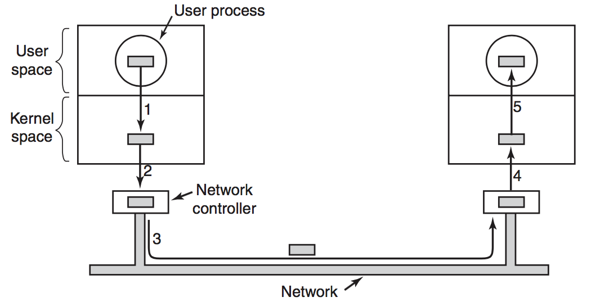- Transmisión de datos pasa por varios buffers intermedios.
- Buffers pueden reservarse mientras dura la transmisión.
- Múltiples dispositivos conectados (múltiples clientes) $\Rightarrow$ uso de memoria
Sistemas de Disco
Memoria Secundaria
Almacenamiento de alta capacidad
Más lenta que almacenamiento principal
Memoria no-volátil
Dispositivo: discos magnéticos
- Brazos (arms) se mueven juntos.
- Brazos poseen cabezas lectoras (heads)
- Platos (platter) divididos en tracks circulares
- Tracks divididos en sectores: bloques de 512 byte
- Conjunto de tracks entre varios platos forman un cilindro
- Velocidades de rotación: 5400, 7200, 10000, 15000 RPM (rotaciones por minuto)
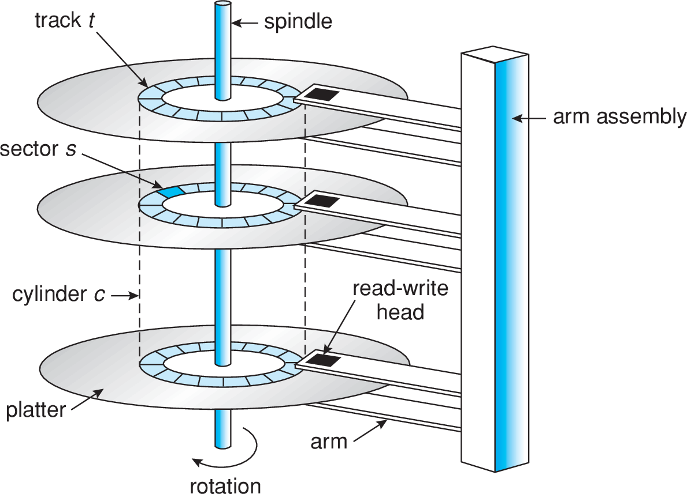
Geometría de discos magnéticos
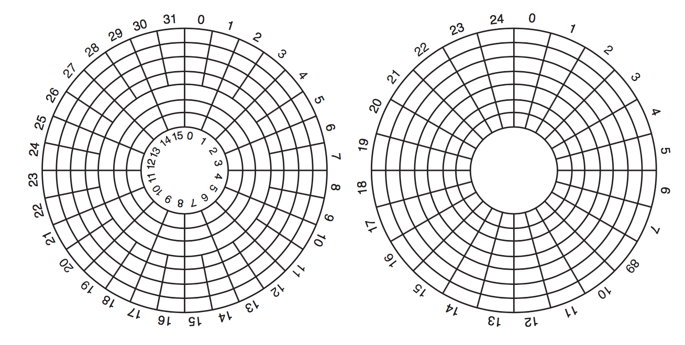Geometría física Geometría virtual
Cada sector está representado por $\langle$cilindro, head, sector $\rangle$: CHS addressing
Sistemas modernos asignan número secuencial a los sectores: LBA, Logical Based Addressing
Driver de disco traduce la dirección solicitada a una posición física
Transferencia de datos
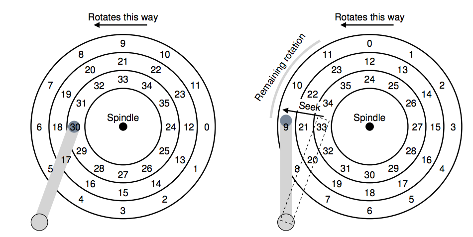Tiempo de posicionamiento depende de:
- Latencia rotacional. Búsqueda en un track. Tiempo para que el sector quede debajo del brazo.
- Seek time. Cambio de track. Tiempo para mover el brazo hasta el cilindro buscado.
Al tiempo de posicionamiento se debe sumar el tiempo de transferencia
- Leer sector consecutivos es más rápido
- Tip: es bueno leer sectores contiguos de disco
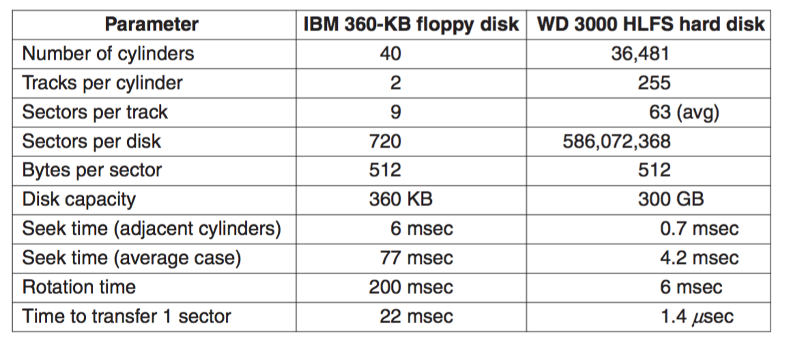
Discos de estado sólido
Solid-State Drive (SSD)
- Sin seek time ni latencia rotacional
- Más rápidos
- Más costoso por MB
- Menor consumo eléctrico
- Celdas poseen cantidad limitada de reescrituras
Formateo de disco
Formateo de bajo nivel o formateo físico
- Crea estructura de sectores: header + data + trailer (incluyendo ECC)
- Ejecutado en fábrica
- Low-level Formatting equivale a regresar a valores de fábrica
Particionamiento
- Agrupación de sectores que son tratados como discos separados
- Tabla de particiones accesible en Master Boot Record (MBR).
- MBR: 32-bit para direccionar bloques de 512 byte.
- Sistemas modernos usan GPT: GUID Partition Table
Formateo lógico
- Estructuras para sistema de archivos en una partición.
Scheduling de accesos
Sistema Operativo solicita datos del disco especificando:
- Lectura o escritura
- Dirección de disco (CHS ó LBA)
- Dirección de memoria física (buffer)
- Número de sectores a transferir
Sistema Operativo puede encolar y ordenar solicitudes
El orden de atención determina el seek time de la transferencia
Scheduling FCFS
Justo, pero no necesariamente el de mejor servicio
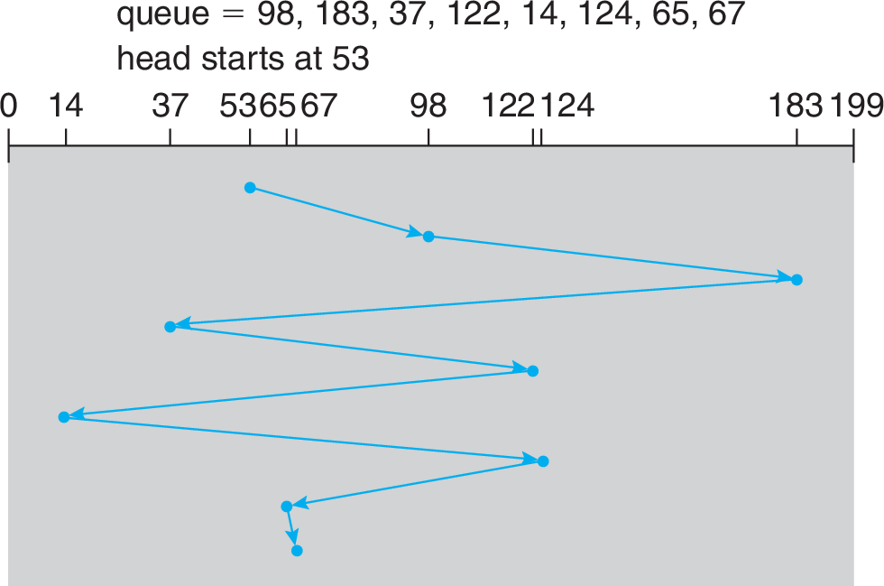
Medida de latencia: desplazamiento que debe hacer el brazo $=640$
Scheduling SSTF
Shortest Seek Time First
Busca el que esté más cerca de la posición actual
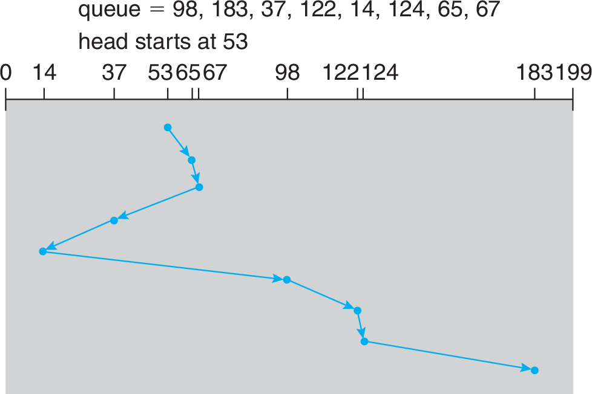
Desplazamiento $=208$
No es óptimo ¿por qué?
Posible inanición de sectores alejados
Scheduling SCAN
El elevador
Brazo se mueve de un extremo a otro y sirve todo lo que encuentre en el camino ...
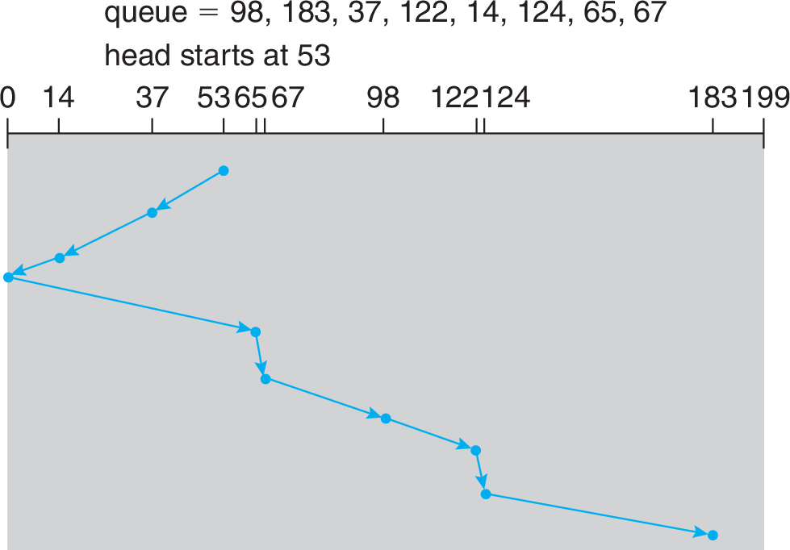
C-SCAN. Elevador circular.
Las solicitudes que llegan justo después que el brazo ha pasado, llevan más tiempo esperando
- Llega a un extremo y se mueve completamente al extremo opuesto. Continúa en el mismo sentido
F-SCAN. Elevador congelado.
No atiende solicitudes nuevas hasta haber acabado con la cola.
Scheduling LOOK y C-LOOK
Similares a SCAN y C-SCAN, pero no se mueven hasta los extremos si no es necesario
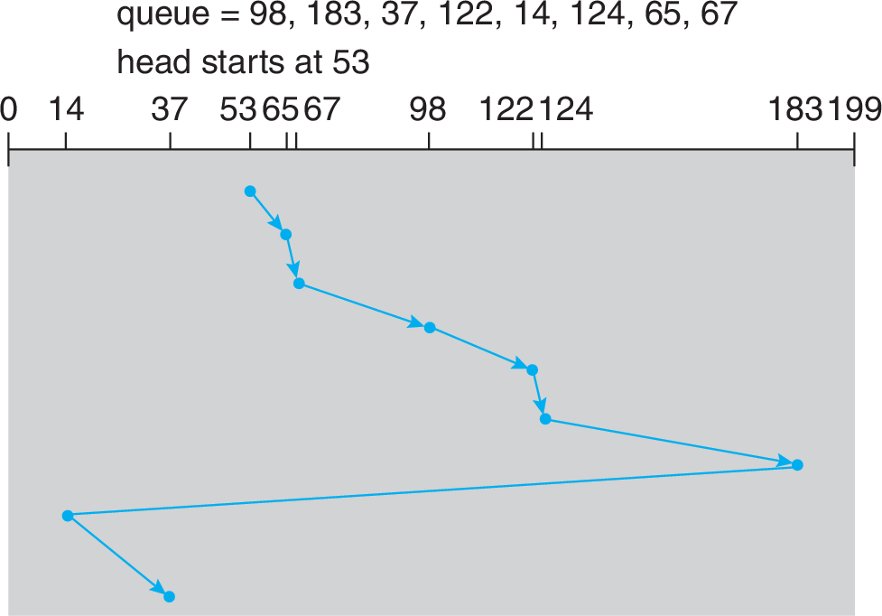
Sistemas de Archivos
Archivos
Colección de información en almacenamiento secundario
- Unidad mínima de almacenamiento para el usuario
- Agrupación lógica de bytes
- Abstracción
Contenido: cualquier cosa
- Significado está determinado por la forma en que se utiliza su contenido
- Texto, imagen, código fuente, código binario (ejecutable), ...
Archivos
Caracterizando un archivo
Try yourself:ls -i file, ystat file
Directorios
Archivos se organizan en una estructura de directorios (otra abstracción)
- Nombre (low-level name): inode number
- Contiene lista de pares: (readable name, low-level name)
- Puede contener otros directorios: jerarquía o árbol de directorios
- Jerarquía empieza en una raíz: root, o
/ - Usa un separador:
/ - Unidades son subdirectorios
- Nombres con subdirectorios: pathname o ruta
- Ruta absoluta: Absolute path
/foo,/bar/bar,/bar/foo/bar.txt- Ruta relativa: Relative path
foo,foo/bar.txt,foo/bar.txt
- Ruta absoluta no puede repetirse
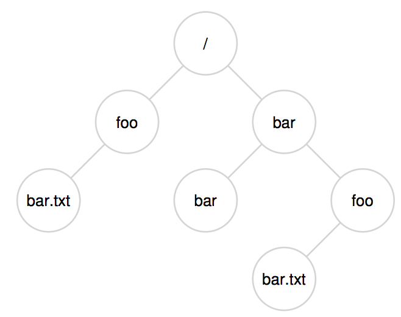
Directorios
Archivos se organizan en una estructura de directorios (otra abstracción)
- Nombre (low-level name): inode number
- Contiene lista de pares: (readable name, low-level name)
- Puede contener otros directorios: jerarquía o árbol de directorios
- Jerarquía empieza en una raíz: root, o
/ - Usa un separador:
/ - Unidades son subdirectorios
- Nombres con subdirectorios: pathname o ruta
- Ruta absoluta: Absolute path
/foo,/bar/bar,/bar/foo/bar.txt- Ruta relativa: Relative path
foo,foo/bar.txt,foo/bar.txt
- Ruta absoluta no puede repetirse
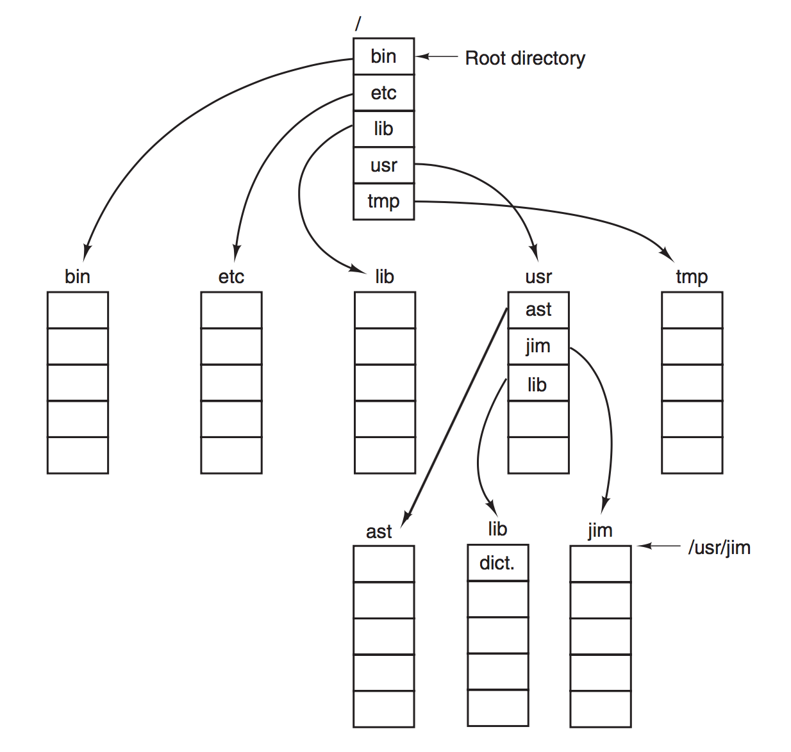
API de Sistema de Archivos
Archivos
- Creación:
open - Lectura/Escritura:
read, write - Lectura/Escritura (no secuencial):
lseek - Escritura inmediata:
fsync - Renaming:
mv - Estado:
stat - Eliminación:
rm
Directorios
- Creación:
mkdir - Lectura:
opendir,readdir,closedir - Eliminación:
rmdir
Try yourself: strace commandLinks
Una manera sencilla de compartir archivos: que el mismo archivo pertenezca a dos directorios
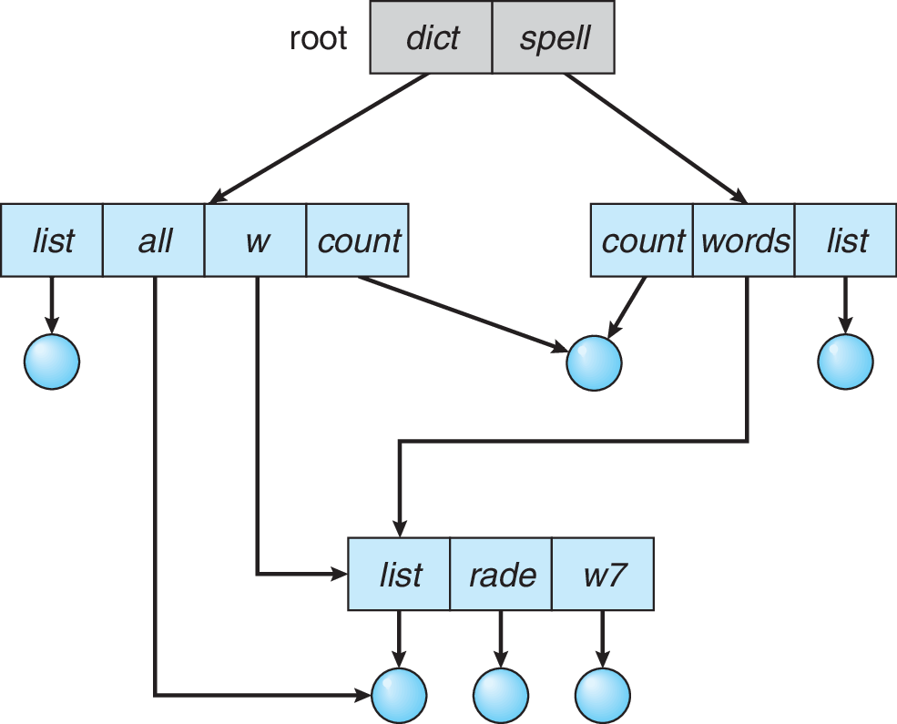
- Implementación usando links
- Symbolic links: link a nombre de archivo (
ln -s) - Hard link: link a archivo (
ln)
¿Qué hacer al borrar un archivo?
- Symbolic links. Si se borra el archivo original, el link sigue existiendo, y debe ser eliminado manualmente

- Hard links. Links aumentan un contador de referencias el archivo. El archivo solo es eliminado cuando no quedan más referencias a él.
Montando sistemas de archivos
Sistema puede manejar múltiples sistema de archivos en discos (dispositivos de bloques)
Para acceder a sistemas de archivos se necesita un punto de acceso, o mountpoint. Sistema operativo integra el sistema de archivos a la jerarquía actual usando
mountmount /dev/sda1 /home/users 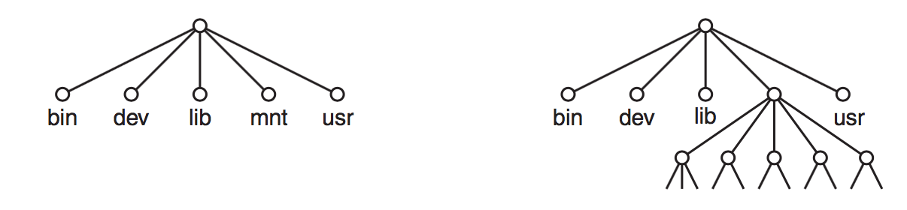
Try yourself: mountImplementación de sistemas de archivos
El sistema de archivos permite obtener una dirección de disco (un bloque) a partir de un conjunto de datos simbólicos: nombre de archivo, directorio, rutas, links, ...
- ISO9660 (CD-ROMs)
- UFS: Unix File System, basado Berkeley Fast File System (FFS)
- FAT, FAT32, NTFS: Windows
- ext3, ext4: Linux
- HFS+: MacOS X
- VFS, FUSE
Master Boot Record (MBR). Sector 0. Indica Partition Table
- Boot Control Block. Uno por cada partición. Permite cargar el sistema operativo.
- Unix: Boot block
- Windows: Partition Boot Sector
- Volume Control Block. Datos de formato del sistema de archivos.
- Tipo de sistema de archivos, número de bloques, …
- Unix: Superblock
- Windows: Master File Table
- Estructura de directorio. Archivos.
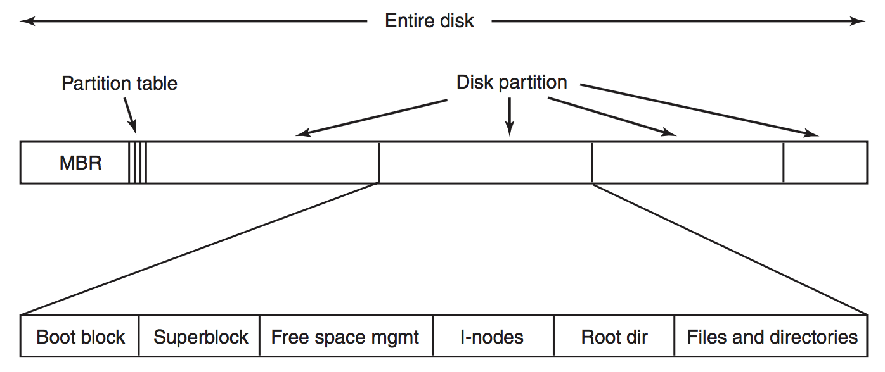
Virtual File System (VFS)
Interfaz común para distintos sistemas de archivos
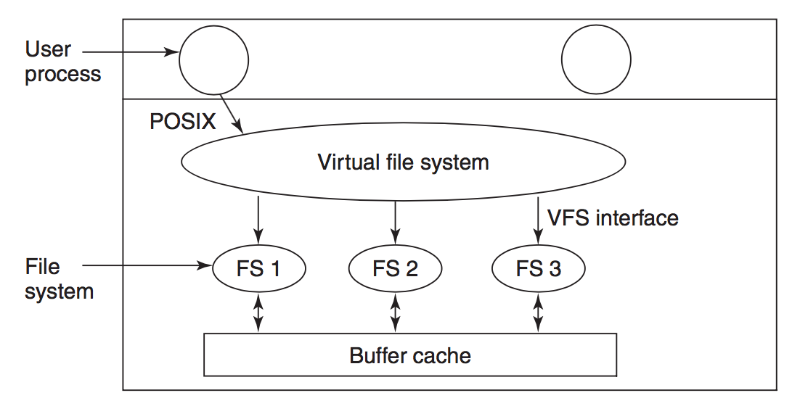Cualquier sistema de archivos que implementa la interfaz VFS puede ser incorporado al sistema
Virtual File System (VFS)
- Tabla de archivo abiertos mantiene file descriptors. Estructuras en memoria con información de archivo
- v-node representa el punto de acceso al archivo. Cada v-node apunta a funciones del sistema de archivos que ejecutan las llamadas concretas
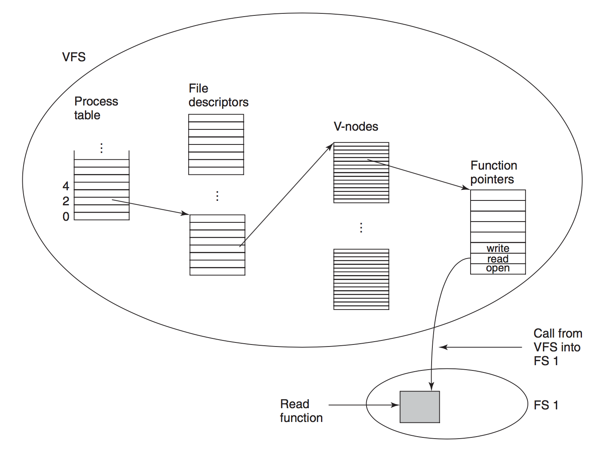
Facilita la incorporación de distintos sistemas de archivos
Estructuras en memoria principal
- Mount table. Tabla de sistema de archivos montados.
- Directorios recientes
- Tabla de archivos abiertos en el sistema
- Tabla de archivos abiertos por proceso
- Buffers de bloques de disco
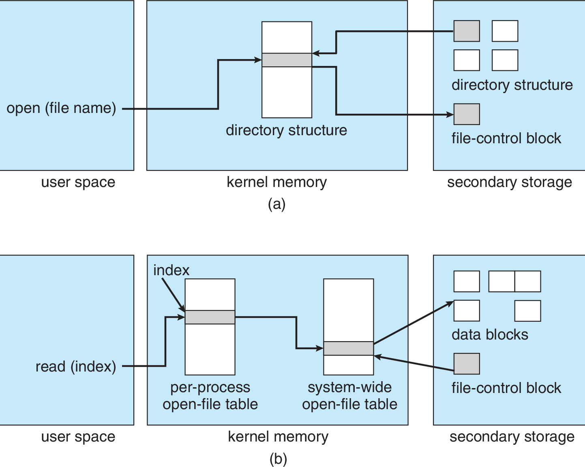
Asignación de bloques
Cada archivo requiere utilizar bloques de disco
- Bloques deben ser asignados de manera eficiente
- Mala asignación provocará demoras en tiempos de acceso
- Estrategias de asignación de bloques
Asignación contigua
- Archivo de $n$ bloques: $b, b+1, \ldots b+n-1$
- Fácil de acceder a siguiente bloque
- -Problema: fragmentación externa
- Require operaciones de compactación (defragmentación)
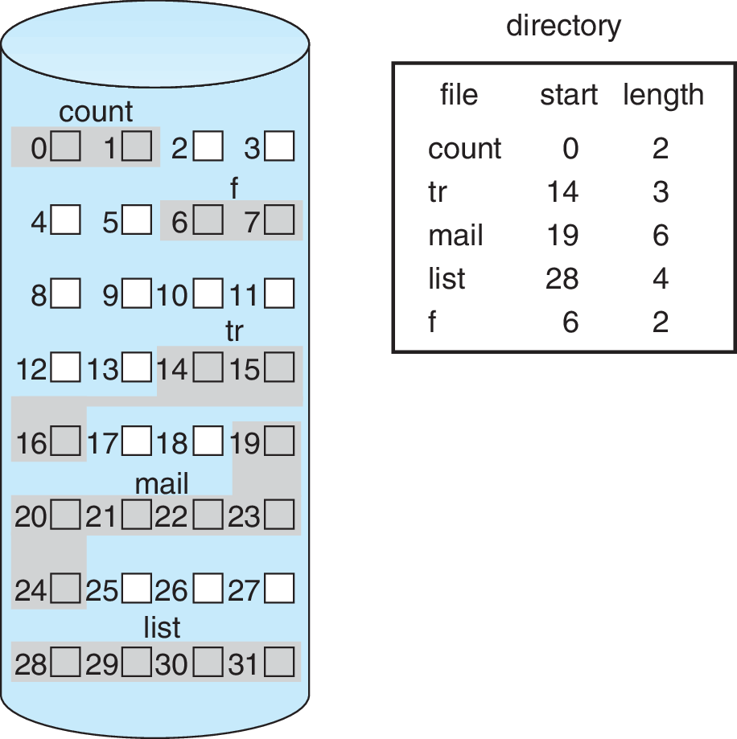
Asignación enlazada (linked)
- Almacena punteros a bloque siguiente
- Ej: bloque de 512 bytes, solo puede guardar 508 bytes. Se pierde espacion.
- No requiere tamaño inicial de archivo. Puede crecer.
- -Acceso solo secuencial.
- Alternativa: almacenar clusters de bloques en lugar de bloques individuales (frag. interna)
- -Vulnerable a falla de un bloque
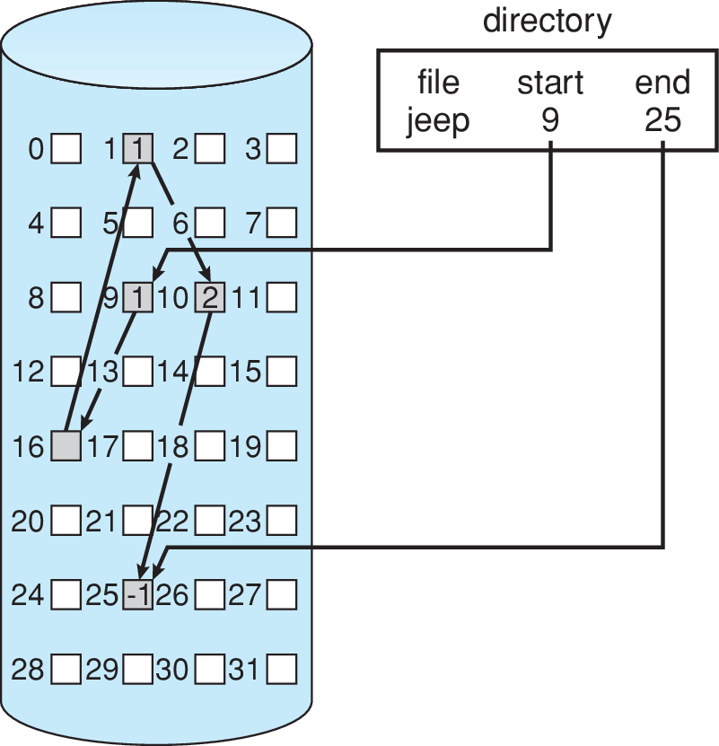
Asignación enlazada (linked): FAT
- FAT: File Allocation Table
- Tabla al inicio del disco con una entrada por archivo
- Último cluster almacena EOF (end-of-file)
- +Mejor acceso aleatorio
- -Limitado por tamaño de tabla (para FAT32, 4GB por archivo)
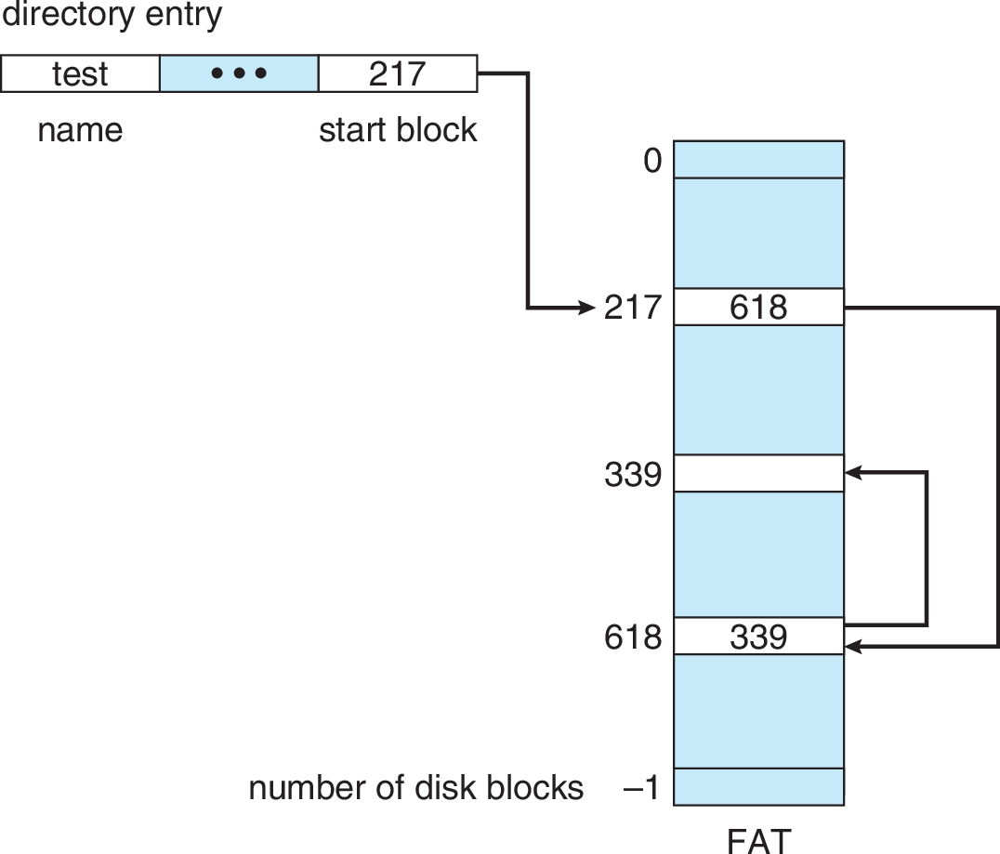
Asignación indexada
- Archivos contienen index block
- Index Block contiene bloques del archivo
- Último cluster almacena EOF (end-of-file)
- +Acceso aleatorio sin frag. externa
- Se pierde espacio por tamaño de index block
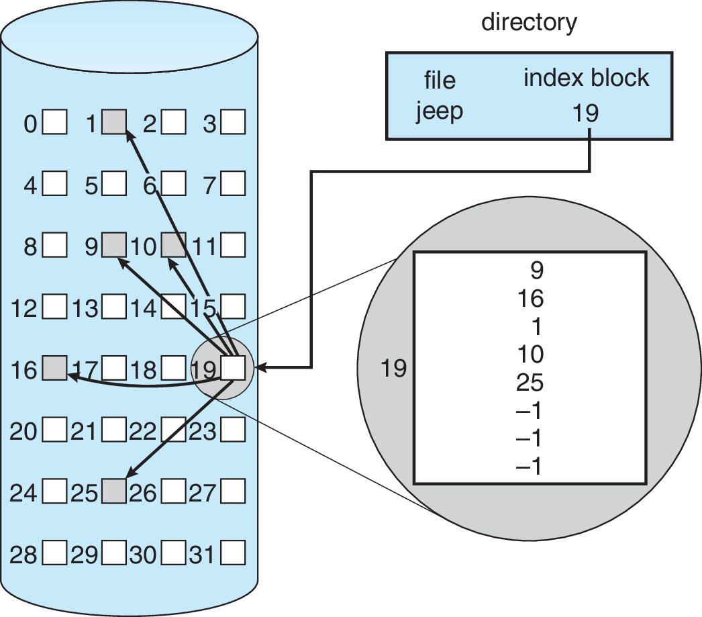
Asignación indexada: tamaño del index block
- Esquema enlazado: última entrada de index block apunta a otro index block
- Índice multinivel: similar a tablas de página multinivel
- Ej: blocks de 4KB, permiten 1024 punteros (de 32-bit)
- Dos niveles permiten direccionar $1048576$ bloques $\to 4$GB
- Esquema combinado: primeros $p$ punteros son bloques directos, los siguientes apuntan a bloque de índice simple, los siguientes a bloque de índice doble, etc
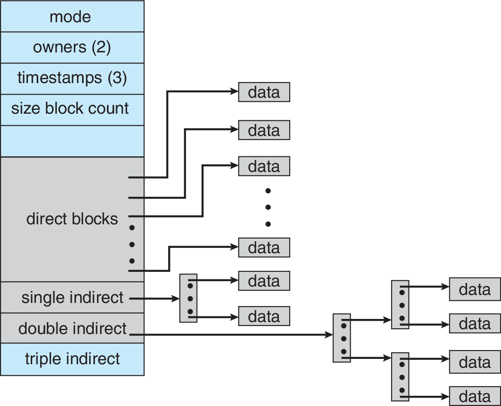
Espacio libre
¿Cómo encontrar bloques libres?
Bit vector ó bitmap de bloques libres
- +Sencillo, eficiente, e implementable en hardware
- -No escala tan bien
- Disco de 1.3GB, con bloques de 512 byte $\to 332$KB
- Disco de 1TB, con bloques de 4KB $\to 256$MB
Espacio libre
Lista enlazada
- Punteros a bloques libres
- Bloques nuevos se agregan a la lista
- -Poco eficiente
- Mejora: agrupar espacios contiguos
- Mantener punteros a espacios libres + número de espacios contiguos
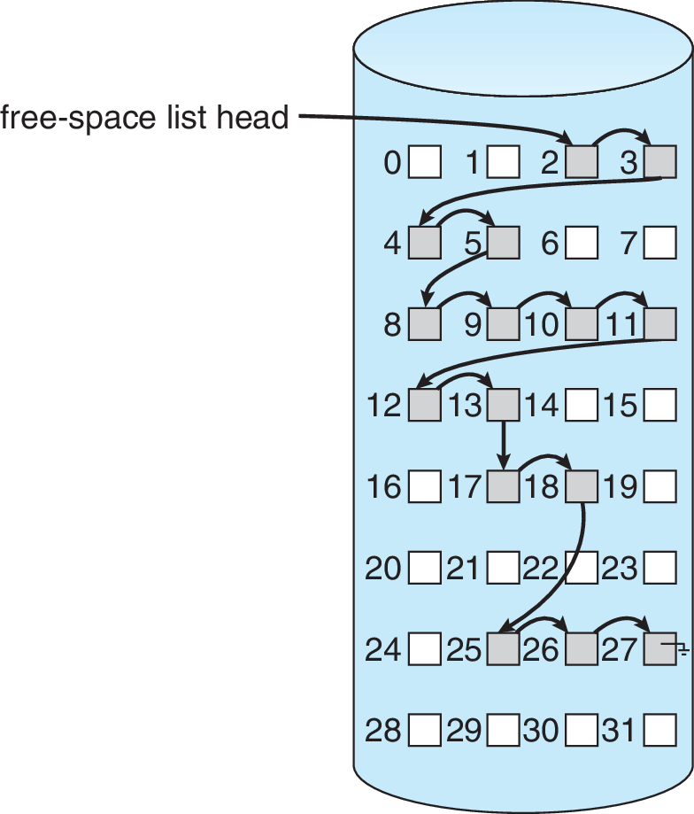